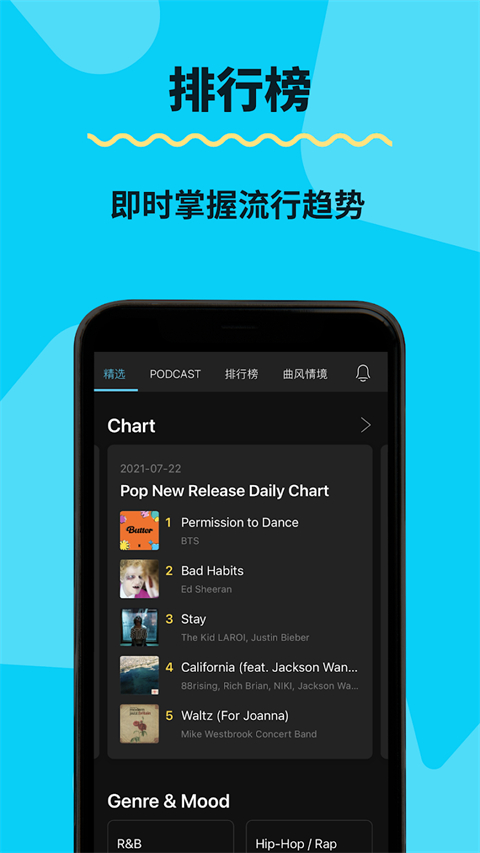
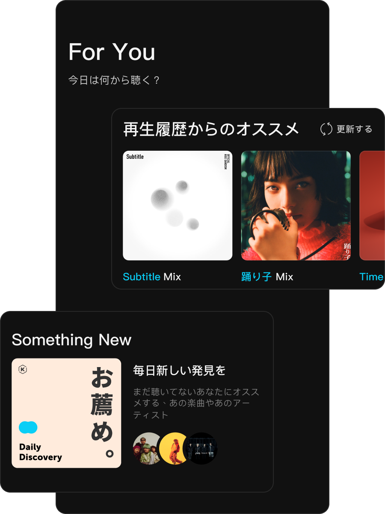

KKBOX 对比评测：在亚洲中文串流里它到底处在什么位置
用过 Spotify、Apple Music 也用过 KKBOX 的老用户，聊聊它在亚洲本土内容、歌词体验、AI 歌单上的差异化，以及哪些人值得选它
说实话，全球串流音乐市场说得上名字的平台我都用过了。Spotify 毫无疑问是全球霸主，Apple Music 背靠苹果生态，QQ 音乐在中国大陆稳坐第一。但如果你关注的是华语、台语、粤语、日语、韩语这片亚洲本土内容密度极高的区域，KKBOX 是一个绕不开的角色——它在台湾、香港、新加坡、马来西亚这些华语东南亚市场的渗透力，是 Spotify 反而不如它的地方。
我用 KKBOX 已经超过三年，中间来来回回对比过不下五次，每次都因为它某个别家平台没有的细节留了下来。这篇就从一个老用户的视角，把 KKBOX 的定位、它做对了什么、又在哪些方面存在明显取舍，一次性说清楚。
先给它定个位：不是亚洲的 Spotify，而是亚洲特色更鲜明的「亚洲串流」
Spotify 进亚洲市场做的事情很明确：把全球版权库拉进来，再补一点本地内容。这种模式在 Spotify 上很好用，因为它的全球推荐算法实在太成熟了——你听一首华语流行，它可以给你推到北欧独立乐队，这条发现链上的每一环都算得清清楚楚。
KKBOX 的出发点完全相反。它从第一天起就扎根亚洲华语区的本土内容生态，去官网就能看到它按语种和地区组织内容的整个逻辑，现在 Podcast 板块华语节目占比约 70%，涵盖台湾、香港、新加坡、马来西亚、日本等地区的 15000 多档节目。这个数字在 Spotify 的 Podcast 库里可能只算个零头，但密度和针对性完全不同——你在 KKBOX Podcast 首页刷到的「台湾热门时事」「香港财经访谈」，是 Spotify 永远不会主动推给一个华语用户的内容。
简单说：Spotify 给你看世界，KKBOX 给你看亚洲华语圈。
它的三个差异化，是同类平台没做到的
第一个：华语/日语/韩语的歌词体验，真的没人比它做得细
我对歌词功能的评价向来很高，但 KKBOX 在这方面的细节超出了我的预期。
它不仅有逐字对齐的同步歌词，还针对日语、韩语歌曲做了音译歌词——罗马音直接和日文/韩文并排显示。这个功能对想学唱日语歌但不会五十音的人来说简直是刚需，在 Spotify 和 Apple Music 上至今没见过同等级的支持。翻译歌词同理，热门日语歌直接配官方中文翻译，看歌词学日语效率高很多。
还有卡拉 OK 模式。当前演唱的那一字会放大高亮，背景歌词变暗，跟 KTV 的字幕效果几乎一样。歌词模式下还能点击任意一行直接跳转到对应时间点反复练习——想把某段 rap 唱准，这个功能比你想象中好用得多。
桌面端甚至有悬浮歌词窗，不打开播放器也能看到当前歌词，位置大小透明度都能调。这些细节单独拎出来都不算什么，但放在一起就是一套完整的「听歌练歌」体验，别的平台要么没做，要么做了个阉割版。

第二个：情绪歌单体系，直接解决「我想听点什么但不知道具体曲风」这个老问题
Spotify 和 Apple Music 的分类体系，本质上还是「按曲风 → 按场景」的思路：爵士下面放冷爵士硬波普，再给你一个「学习用」的歌单。这个结构的前提是你知道自己想听爵士。
但大多数时候我打开播放器，脑子里想的是「今天下雨了，想找点温暖的歌」「睡前白噪音，不要有人声」——这种模糊的情绪描述，按曲风分类根本找不到入口。
KKBOX 的情绪歌单直接绕过了这个问题。它有完整的情绪维度：轻松愉快、专注安静、运动健身、夜晚氛围、情感表达、派对聚会，每个情绪下有十几个细分歌单，比如「晨间活力」「深夜电台」「酒吧爵士」。我不需要知道自己想听 Lo-fi 还是冷爵士，选「想听歌放松一下」就够了。
更妙的是它和 AI DJ 的结合。KKBOX 不只有常规的「每日 AI 推荐」（虽然它也做，而且保留你常听艺人的策略比 Spotify 更贴心——Spotify 倾向推相似但没听过的新艺人，KKBOX 不会把你收藏了三年的周杰伦从推荐列表里踢出去），还有自然语言生成歌单的 AI DJ 派对功能：输入「下雨天不想出门，想听温暖治愈的华语老歌」，AI 几秒内给你出一个 20-30 首的歌单，还会结合你的历史播放数据做个性化调整。
2024 年它在台湾信义区办了全台首场 AI DJ 派对，艺人现场输入描述词让 AI 即时生成歌单——这种产品活动的思路本身就很有 KKBOX 的风格。想深入了解 AI DJ 的描述词技巧、情绪歌单的完整分类，去KKBOX文档翻一下就能看到，它的官方资料在这一块写得比 Spotify 透明多了。
第三个：Podcast 板块的产品设计，是真的认真在做
很多平台把 Podcast 当音乐的附属功能，Spotify 的 Podcast 是搜索子项，Apple Music 干脆分开成两个 App。KKBOX 不一样，Podcast 是独立 Tab，有自己的导航入口和分类体系，搜索结果里也会单独区分歌曲、艺人、Podcast 节目。
更细的是播放器优化。Podcast 的变速是 0.5x 到 2.5x 连续可调，0.1x 步进——音乐播放器通常只有 1.0x / 1.25x / 1.5x / 2.0x 几档固定值。跳过功能默认 30 秒快进快退（适合跳过广告），睡眠定时器支持「当前集结束后停止」，部分热门节目还有转录文字稿。这些都是音乐播放器不会给你做的优化，因为 Podcast 和音乐的使用场景完全不同，但大多数平台懒得区分。
它的取舍：这些优势不是没有代价
以上这些体验都不需要折腾，客户端从官方下载就能拿到。说了这么多好的，KKBOX 也有几个我用下来确实能感觉到的短板。
最大的就是地区版权限制。台湾热门节目可能只在台湾可收听，香港本地节目只在香港上架——这和 Spotify 一个账号全球畅听的体验比起来差了不少。之前我用大陆手机号注册的账号，搜不到好几档台湾热门 Podcast，后来换了台湾手机号登录才出来。跨区收听需要对应地区账号 + 当地网络环境，这个门槛是实打实存在的。
然后是全球内容覆盖。如果你主要听西洋音乐或非亚洲地区的 Podcast，KKBOX 的版权库会明显比 Spotify 小一圈。它的编辑团队把重心都放在亚洲本土内容上了，这方面是它的优势所在，但反过来也意味着非亚洲内容不是它的强项。
还有平台生态问题。KKBOX 目前主打亚洲市场，桌面端主要是 Windows 和 macOS，移动端 iOS 和 Android 都有，但 Chromebook 端和 Web 端的体验还比较弱。如果你是重度 Chromebook 用户或者喜欢用浏览器直接听歌，可能需要适应一下。
什么样的人选它，什么样的人选别的
最后给一个明确的选购结论：
如果你符合以下任意一条，KKBOX 值得你认真试试：
- 主要听华语、台语、粤语、日语、韩语这几类亚洲本土内容，尤其是 Podcast
- 想学唱外语歌，需要音译歌词和卡拉 OK 模式
- 经常有「想听歌但不知道具体曲风」的模糊场景，情绪歌单对你有用
- 身处台湾、香港、新加坡、马来西亚或其他华语东南亚地区，享受本土内容生态的便利
如果你的需求偏向以下方向，Spotify 或 Apple Music 可能更适合：
- 主要听西洋音乐、非亚洲地区 Podcast
- 一个账号全球畅听，不折腾地区限制
- 重度依赖苹果生态（Apple Music）或已经在 Spotify 有多年的收藏和推荐积累
- 主要用 Chromebook 或 Web 端听歌
我的实际用法是三个平台交叉使用：Spotify 负责全球音乐和西洋 Podcast 的发现，Apple Music 负责苹果设备的无缝接力，KKBOX 专门用来补华语 Podcast 和卡拉 OK 练歌。这种组合听起来麻烦，但串流平台本来就各有分工——没有哪个平台能让所有人所有需求都满意，选对自己最核心的那个就够了。

这套资料在三个仓库都能拿到：GitHub 主仓库、Gitee 镜像、GitCode 备份，国内访问选 Gitee 或 GitCode 更顺畅。